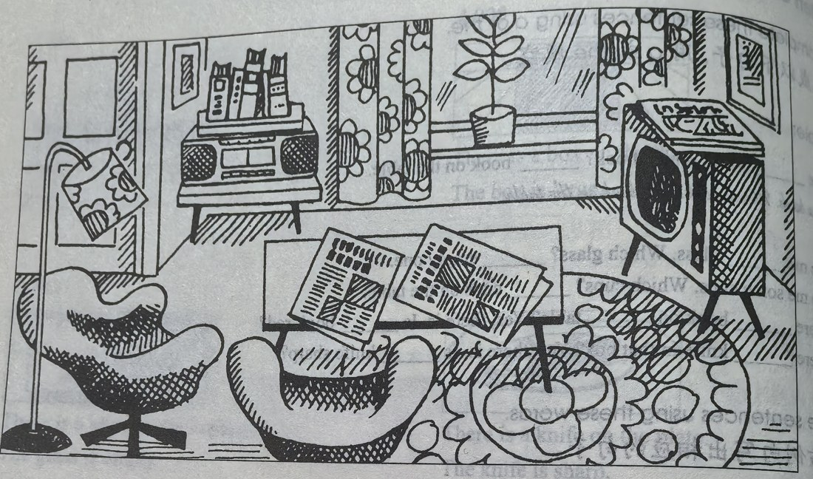

Lesson content · 课文
Lesson 27: Mrs. Smith's living room · 史密斯太太的客厅
Listen then answer this question. 听录音，然后回答问题。
Where are the books?
书在哪里？
Mrs. Smith’s living room is large.
There is a television in the room.
The television is near the window.
There are some magazines on the television.
There is a table in the room.
There are some newspapers on the table.
There are some armchairs in the room.
The armchairs are near the table.
There is a stereo in the room.
The stereo is near the door.
There are some books on the stereo.
There are some pictures in the room.
The pictures are on the wall.

New words and expressions · 生词和短语
| Word · 单词 | Pronunciation · 音标 | Meaning · 词义 |
|---|---|---|
| living room | /ˈlɪvɪŋ ruːm/ | 客厅 |
| near | /nɪə/ | prep. 靠近 |
| window | /ˈwɪndəʊ/ | n. 窗户 |
| armchair | /ˈɑːmtʃeə/ | n. 扶手椅 |
| door | /dɔː/ | n. 门 |
| picture | /ˈpɪktʃə/ | n. 图画 |
| wall | /wɔːl/ | n. 墙 |
Notes on the text · 课文注释
- There are 的结构中要用复数名词。
- near the window (door)，靠近窗（门），为介词短语。在本句中作表语。
- on the wall，在墙上。介词短语作表语。
Chinese translation · 参考译文
史密斯太太的客厅很大。
客厅里有台电视机。
电视机靠近窗子。
电视机上放着几本杂志。
客厅里有张桌子。
桌上放着几份报纸。
客厅里有几把扶手椅。
这些扶手椅靠近桌子。
客厅里有台立体声音响。
音响靠近门。
音响上面有几本书。
客厅里有几幅画。
画挂在墙上。
Practice · 课文练习
Understand the lesson · 课文理解
Comprehension · 理解题
Answer the question about the lesson text. 根据课文回答问题。
-
comprehension: Comprehension · 理解题 — Where are the books?
Practice worksheet · 配套练习
A. Dialogue
Read this dialogue. Fill in the missing words. 填空。
-
worksheet: A. Dialogue — Mrs. Jackson: My new living room is large.
Mrs. Smith: My new ____ ____ is ____, too.
Mrs. Jackson: Are there armchairs in your ____ ____?
Mrs. Smith: Yes, ____ are two. ____ are very nice.
Mrs. Jackson: ____ there pictures ____ the walls?
Mrs. Smith: Yes, there are ____ pictures ____ the walls. ____ are new. And the stereo’s new. And the television’s new!
B. A memory test
Look at the picture on page 53 of the Students’ Book. Then close the book and answer these questions about Mrs. Smith’s living room. 参见学生用书第53页上的图，然后合上书，回答以下有关史密斯太太客厅的问题。（插图见本页课文。）
Example · 例句
Is there a television in her living room? — Yes, there is.
-
worksheet: B. A memory test — Is the television near the door?
-
worksheet: B. A memory test — Where are the magazines?
-
worksheet: B. A memory test — Where are the armchairs?
-
worksheet: B. A memory test — Are the newspapers on the stereo?
-
worksheet: B. A memory test — Where are the newspapers?
C. Vocabulary
Choose the best word. 完成以下练习。
-
worksheet: C. Vocabulary — There are some lovely ____ on the wall. (windows / pictures)
-
worksheet: C. Vocabulary — There are some new ____ on the table. (shops / magazines)
-
worksheet: C. Vocabulary — There is a big red carpet on the ____. (floor / wall)
-
worksheet: C. Vocabulary — There are three ____ in our living room. (dressing tables / armchairs)
Grammar practice · 语法练习
I. Fill in the blanks with in, on, or near
- This is a classroom ___ a school. The teacher is ___ the classroom, and the students are ___ the classroom, too. There is a table ___ the room. There are some pencils and some flowers ___ the table. The teacher is ___ the table. There are two windows ___ the room. The window ___ the left is open, but the window ___ the right is shut. A student is ___ the open window. There is a clock ___ the wall ___ the door, and there is a picture ___ the wall.
II. Rewrite the sentences according to the examples
Change the statements into the plural.
- 1a. There's a girl in the class. -> There are some girls in the class.
- 1b. There's a magazine on the table.
- 1c. There's a pen on the desk.
- 1d. There's a book on the stereo.
- 1e. There's an air hostess on the aeroplane.
- 1f. There's a black dog in the garden.
- 1g. There's a boy in the kitchen.
- 1h. There's an office assistant in the office.
- 1i. There's a bottle in the refrigerator.
- 1j. There's a policewoman in the street.
Change the questions into the plural.
- 2a. Is there a chair in the kitchen? -> Are there any chairs in the kitchen?
- 2b. Is there a window in the room?
- 2c. Is there a fork in the box?
- 2d. Is there a magazine on the shelf?
- 2e. Is there an egg in the basket?
- 2f. Is there a tin in the cupboard?
- 2g. Is there an armchair in the living room?
- 2h. Is there a cup in the cupboard?
- 2i. Is there a shoe near the door?
- 2j. Is there a picture on the wall?
III. Ask and answer questions according to the example
Example: Are there any sharp pencils on the desk? -> No, there aren't any sharp pencils on the desk. There are some blunt ones in my schoolbag.
sharp pencils/on the desk; blunt pencils/in my schoolbag
Are there any sharp pencils on the desk? No, there aren't any sharp pencils on the desk. There are some blunt ones in my schoolbag.
clean glasses/in the cupboard; dirty glasses/on the tablebig plates/on the table; small plates/on the shelfred flowers/in the living room; yellow flowers/in the living roomlong spoons/in the cupboard; short spoons/on this platenew chairs/in the classroom; old chairs/in the classroomfull bottles/on the floor; empty bottles/on the tabledirty shirts/on the bed; dirty shirts/on the chairblue hats/in this shop; blue hats/in that shopgreen leaves/on the tree; yellow leaves/on the ground
Your notes and answers
Use this space for longer responses or exercises that do not have an individual answer box.